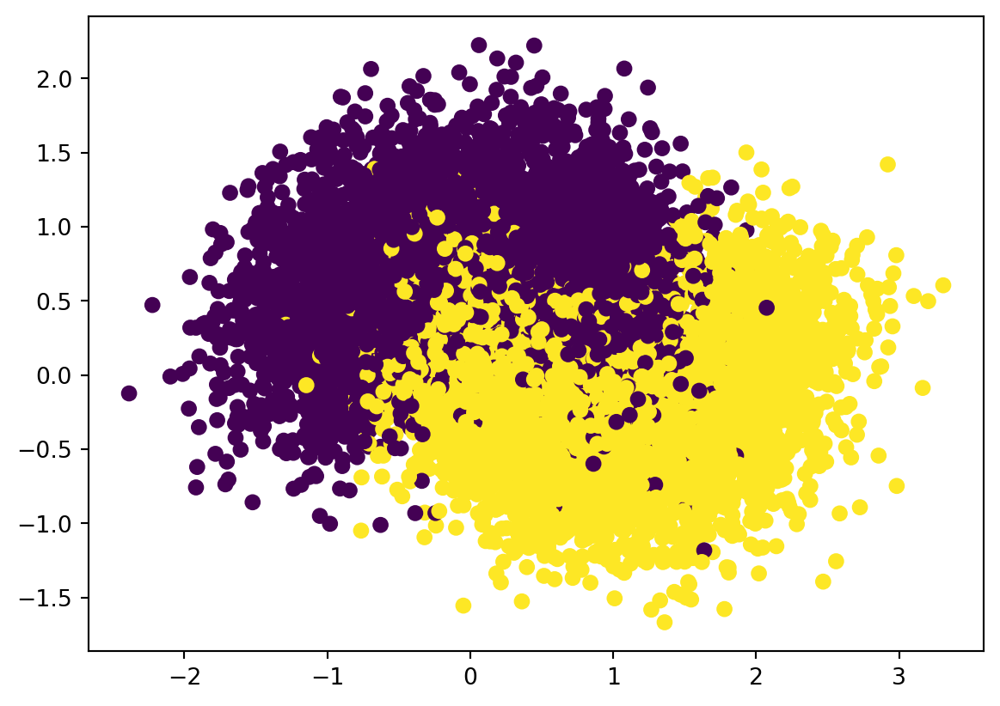

After we get some relatively simple classifiers (sometimes also called weak classifiers), we might put them together to form a more complicated classifier. This type of methods is called an ensemble method. The basic way to ``ensemble’’ classifiers together to through the voting machine.
There are mainly two ways to generate many classifiers.
bagging: This is also called bootstrap aggregating. The idea is
First we randomly pick samples from the original dataset to form a bunch of new trainning datasets;
Then we apply the same learning methods to those trainning datasets to get a bunch of classifiers;
Finally apply all these classifiers to the data we are interested in and use the most frequent class as the result.
boosting: There are a bunch of classifiers. We assign weights to each of the classifiers and change the weights adaptively according to the results of the current combination.
4.1 Bootstrap aggregating
4.1.1 Basic bagging
One approach to get many estimators is to use the same training algorithm for every predictor and train them on different random subsets of the training set. When sampling is performed with replacement, this method is called bagging (short for bootstrap aggregating). When sampling is performed without replacement, it is called pasting.
Consider the following example. The dataset is the one we used in Chpater 3: make_moon. We split the dataset into training and test sets.
from sklearn.datasets import make_moonsimport matplotlib.pyplot as pltfrom sklearn.model_selection import train_test_splitX, y = make_moons(n_samples=10000, noise=0.4, random_state=42)plt.scatter(x=X[:, 0], y=X[:, 1], c=y)X_train, X_test, y_train, y_test = train_test_split(X, y, test_size=0.15)

We would like to sample from the dataset to get some smaller minisets. We will use sklearn.model_selection.ShuffleSplit to perform the action.
The output of ShuffleSplit is a generator. To get the index out of it we need a for loop. You may check out the following code.
Note that ShuffleSplit is originally used to shuffle data into training and test sets. We would only use the shuffle function out of it, so we will set test_size to be 1 and use _ later in the for loop since we won’t use that part of the information.
What we finally get is a generator rs that produces indexes of subsets of X_train and y_train.
from sklearn.model_selection import ShuffleSplitn_trees =1000n_instances =100rs = ShuffleSplit(n_splits=n_trees, test_size=1, train_size=n_instances).split(X_train)
Now we would like to generate a list of Decision Trees. We could use the hyperparameters we get from Chapter 3. We train each tree over a certain mini set, and then evaluate the trained model over the test set. The average accuracy is around 80%.
Note that rs is a generator. We put it in a for loop, and during each loop it will produce a list of indexes which gives a subset. We will directly train our model over the subset and use it to predict the test set. The result of each tree is put in the list y_pred_list and the accuracy is stored in the list acc_list. The mean of the accuracy is then computed by np.mean(acc_list).
Now for each test data, we actually have n_trees=1000 predicted results. We can treat it as the options from 1000 exports and would like to use the majority as our result. For this purpose we would like to use mode() which will find the most frequent entry.
Since the output of mode is a tuple where the first entry is a 2D array, we need to reshape y_pred_mode. This is the result using this voting system. Then we are able to compute the accuracy, and find that it is increased from the previous prediction.
accuracy_score(y_pred_mode, y_test)
0.8526666666666667
4.1.2 Some rough analysis
The point of Bagging is to let every classifier study part of the data, and then gather the opinions from everyone. If the performance are almost the same between individual classifers and the Bagging classifiers, this means that the majority of the individual classifiers have the same opinions. One possible reason is that the randomized subsets already catch the main features of the dataset that every individual classifiers behave similar.
4.1.2.1 Case 1
Let us continue with the previous dataset. We start from using Decision Tree with max_depth=1. In other words each tree only split once.
n_trees =500n_instances =1000rs = ShuffleSplit(n_splits=n_trees, test_size=1, train_size=n_instances).split(X_train)y_pred_list =list()acc_list =list()for mini_train_index, _ in rs: X_subset = X_train[mini_train_index] y_subset = y_train[mini_train_index] clf_ind = DecisionTreeClassifier(max_depth=1) clf_ind.fit(X_subset, y_subset) y_pred = clf_ind.predict(X_test) y_pred_list.append(y_pred) acc_list.append(accuracy_score(y_pred, y_test))print('The mean of individual accuracy: {}'.format(np.mean(acc_list)))voting = np.array(y_pred_list)y_pred_mode, _ = mode(voting, axis=0, keepdims=False)print('The accuracy of the bagging classifier: {}'.format(accuracy_score(y_pred_mode, y_test)))
The mean of individual accuracy: 0.7716333333333334
The accuracy of the bagging classifier: 0.778
The two accuracy has some differences, but not much. This is due to the fact that the sample size of the subset is too large: 1000 can already help the individual classifers to capture the major ideas of the datasets. Let us see the first 1000 data points. The scattering plot is very similar to that of the whole dataset shown above.
If we reduce the sample size to be very small, for example, 20, the sampled subset will lose a lot of information and it will be much harder to capture the idea of the original dataset. See the scattering plot of the first 20 data points.
In the above code, bag_clf is a bagging classifier, made of 500 DecisionTreeClassifers, and is trained over subsets of size 100. The option bootstrap=True means that it is bagging. If you would like to use pasting, the option is bootstrap=False.
This bag_clf also has .fit() and .predict() methods. It is used the same as our previous classifiers. Let us try the make_moon dataset.
When we use bagging, it is possible that some of the training data are not used. In this case, we could record which data are not used, and just use them as the test set, instead of providing extra data for test. The data that are not used is called out-of-bag instances, or oob for short. The accuracy over the oob data is called the oob score.
We could set oob_score=True to enable the function when creating a BaggingClassifier, and use .oob_score_ to get the oob score after training.
When the classifiers used in a bagging classifier are all Decision Trees, the bagging classifier is called a random forest. sklearn provide RandomForestClassifier class. It is almost the same as BaggingClassifier + DecisionTreeClassifer.
When we use the Decision Tree as our base estimators, the class RandomForestClassifier provides more control over growing the random forest, with a certain optimizations. If you would like to use other estimators, then BaggingClassifier should be used.
4.1.6 Extra-trees
When growing a Decision Tree, our method is to search through all possible ways to find the best split point that get the lowest Gini impurity. Anohter method is to use a random split. Of course a random tree performs much worse, but if we use it to form a random forest, the voting system can help to increase the accuracy. On the other hand, random split is much faster than a regular Decision Tree.
This type of forest is called Extremely Randomized Trees, or Extra-Trees for short. We could modify the above random forest classifier code to implement the extra-tree algorithm. The key point is that we don’t apply the Decision Tree algorithm to X_subset. Instead we perform a random split.
n_trees =500n_instances =20rs = ShuffleSplit(n_splits=n_trees, test_size=1, train_size=n_instances).split(X_train)y_pred_list =list()acc_list =list()for mini_train_index, _ in rs: X_subset = X_train[mini_train_index] y_subset = y_train[mini_train_index] clf_ind = DecisionTreeClassifier(max_depth=1)# random split i = np.random.randint(0, X_subset.shape[0]) j = np.random.randint(0, X_subset.shape[1]) split_threshold = X_subset[i, j] lsetindex = np.where(X_subset[:, j]<split_threshold)[0]iflen(lsetindex) ==0: rsetindex = np.where(X_subset[:, j]>=split_threshold) rmode, _ = mode(y_subset[rsetindex], keepdims=True) rmode = rmode[0] lmode =1- rmodeelse: lmode, _ = mode(y_subset[lsetindex], keepdims=True) lmode = lmode[0] rmode =1- lmode y_pred = np.where(X_test[:, j] < split_threshold, lmode, rmode).reshape(-1)# The above code is used to use the random split to classify the data points y_pred_list.append(y_pred) acc_list.append(accuracy_score(y_pred, y_test))print('The mean of individual accuracy: {}'.format(np.mean(acc_list)))voting = np.array(y_pred_list)y_pred_mode, _ = mode(voting, axis=0, keepdims=False)print('The accuracy of the bagging classifier: {}'.format(accuracy_score(y_pred_mode, y_test)))
The mean of individual accuracy: 0.620696
The accuracy of the bagging classifier: 0.794
From the above example, you may find a significant increase in the performace from the mean individual accuracy to the Extra-tree classifier accuracy. The accuracy of the Extra-tree classifier is also very close to what we get from the original data points, although its base classifier is much simpler.
In sklearn there is an ExtraTreesClassifier to create such a classifier. It is hard to say which random forest is better beforehand. What we can do is to test and calculate the cross-validation scores (with grid search for hyperparameters tuning).
In the above example, RandomForestClassifier and ExtraTreesClassifier get similar accuracy. However from the code below, you will see that in this example ExtraTreesClassifier is much faster than RandomForestClassifier.
Random Frorest: 9.331970930099487
Extremely Randomized Trees: 2.714216470718384
4.1.7 Gini importance
After training a Decision Tree, we could look at each node. Each split is against a feature, which decrease the Gini impurity the most. In other words, we could say that the feature is the most important during the split.
Using the average Gini impurity decreased as a metric, we could measure the importance of each feature. This is called Gini importance. If the feature is useful, it tends to split mixed labeled nodes into pure single class nodes.
In the case of random forest, since there are many trees, we might compute the weighted average of the Gini importance across all trees. The weight depends on how many times the feature is used in a specific node.
Using RandomForestClassifier, we can directly get access to the Gini importance of each feature by .feature_importance_. Please see the following example.
In this example, you may see that the two features are relavely equally important, where the second feature is slightly more important since on average it decrease the Gini impurity a little bit more.
4.2 Voting machine
4.2.1 Voting classifier
Assume that we have several trained classifiers. The easiest way to make a better classifer out of what we already have is to build a voting system. That is, each classifier give its own prediction, and it will be considered as a vote, and finally the highest vote will be the prediction of the system.
In sklearn, you may use VotingClassifier. It works as follows.
All classifiers are stored in the list clfs, whose elements are tuples. The syntax is very similar to Pipeline. What the classifier does is to train all listed classifiers and use the majority vote to predict the class of given test data. If each classifier has one vote, the voting method is hard. There is also a soft voting method. In this case, every classifiers not only can predict the classes of the given data, but also estimiate the probability of the given data that belongs to certain classes. On coding level, each classifier should have the predict_proba() method. In this case, the weight of each vote is determined by the probability computed. In our course we mainly use hard voting.
Let us use make_moon as an example. We first load the dataset.
from sklearn.datasets import make_moonsfrom sklearn.model_selection import train_test_splitX, y = make_moons(n_samples=10000, noise=0.4, random_state=42)X_train, X_test, y_train, y_test = train_test_split(X, y, test_size=0.15)
We would like to apply kNN model. As before, we build a data pipeline pipe to first apply MinMaxScaler and then KNeighborsClassifier.
We would also want to try Logistic regression method. This will be covered in the next Chapter. At current stage we just use the default setting without changing any hyperparameters.
from sklearn.linear_model import LogisticRegressionclf_lr = LogisticRegression()clf_lr.fit(X_train, y_train)clf_lr.score(X_test, y_test)
0.834
Now we use a voting classifier to combine the results.
You may compare the results of all these four classifiers. The voting classifier is not guaranteed to be better. It is just a way to form a model.
4.3AdaBoost
This is the first algorithm that successfully implements the boosting idea. AdaBoost is short for Adaptive Boosting.
4.3.1 Weighted dataset
We firstly talk about training a Decision Tree on a weighted dataset. The idea is very simple. When building a Decision Tree, we use some method to determine the split. In this course the Gini impurity is used. There are at least two other methods: cross-entropy and misclassified rate. For all three, the count of the elemnts in some classes is the essnetial part. To train the model over the weighted dataset, we just need to upgrade the count of the elements by the weighted count.
You may see that the original Gini impurity is just the weighted Gini impurity with equal weights. Therefore the first tree we get from AdaBoost (see below) is the same tree we get from the Decision Tree model in Chpater 3.
4.3.2 General process
Here is the rough description of AdaBoost.
Assign weights to each data point. At the begining we could assign weights equally.
Train a classifier based on the weighted dataset, and use it to predict on the training set. Find out all wrong answers.
Adjust the weights, by inceasing the weights of data points that are done wrongly in the previous generation.
Train a new classifier using the new weighted dataset. Predict on the training set and record the wrong answers.
Repeat the above process to get many classifiers. The training stops either by hitting \(0\) error rate, or after a specific number of rounds.
The final results is based on the weighted total votes from all classifiers we trained.
Now let us talk about the details. Assume there are \(N\) data points. Then the inital weights are set to be \(\dfrac1N\). There are 2 sets of weights. Let \(w^{(i)}\) be weights of the \(i\)th data points. Let \(\alpha_j\) be the weights of the \(j\)th classifier. After training the \(j\)th classifier, the error rate is denoted by \(e_j\). Then we have
\[
e_j=\frac{\text{the total weights of data points that are misclassified by the $j$th classifier}}{\text{the total weights of data points}}
\]
\[
w^{(i)}_{\text{new}}\leftarrow\text{normalization} \leftarrow w^{(i)}\leftarrow\begin{cases}w^{(i)}&\text{if the $i$th data is correctly classified,}\\w^{(i)}\exp(\alpha_j)&\text{if the $i$th data is misclassified.}\end{cases}
\]
Note
The first tree is the same tree we get from the regular Decision Tree model. In the rest of the training process, more weights are put on the data that we are wrong in the previous iteration. Therefore the process is the mimic of “learning from mistakes”.
Note
The \(\eta\) in computing \(\alpha_j\) is called the learning rate. It is a hyperparameter that will be specified mannually. It does exactly what it appears to do: alter the weights of each classifier. The default is 1.0. When the number is very small (which is recommended although it can be any positive number), more iterations will be expected.
4.3.3 Example 1: the iris dataset
Similar to all previous models, sklearn provides AdaBoostClassifier. The way to use it is similar to previous models. Note that although we are able to use any classifiers for AdaBoost, the most popular choice is Decision Tree with max_depth=1. This type of Decision Trees are also called Decision Stumps.
In the following examples, we initialize an AdaBoostClassifier with 500 Decision Stumps and learning_rate=0.5.
We will use the iris dataset for illustration. The cross_val_score is calculated as follows.
from sklearn.model_selection import cross_val_scorefrom sklearn.datasets import load_irisX, y = load_iris(return_X_y=True)scores = cross_val_score(ada_clf, X, y, cv=5)scores.mean()
C:\Users\Xinli\miniforge3\envs\ds25\Lib\site-packages\sklearn\ensemble\_weight_boosting.py:527: FutureWarning: The SAMME.R algorithm (the default) is deprecated and will be removed in 1.6. Use the SAMME algorithm to circumvent this warning.
warnings.warn(
C:\Users\Xinli\miniforge3\envs\ds25\Lib\site-packages\sklearn\ensemble\_weight_boosting.py:527: FutureWarning: The SAMME.R algorithm (the default) is deprecated and will be removed in 1.6. Use the SAMME algorithm to circumvent this warning.
warnings.warn(
C:\Users\Xinli\miniforge3\envs\ds25\Lib\site-packages\sklearn\ensemble\_weight_boosting.py:527: FutureWarning: The SAMME.R algorithm (the default) is deprecated and will be removed in 1.6. Use the SAMME algorithm to circumvent this warning.
warnings.warn(
C:\Users\Xinli\miniforge3\envs\ds25\Lib\site-packages\sklearn\ensemble\_weight_boosting.py:527: FutureWarning: The SAMME.R algorithm (the default) is deprecated and will be removed in 1.6. Use the SAMME algorithm to circumvent this warning.
warnings.warn(
C:\Users\Xinli\miniforge3\envs\ds25\Lib\site-packages\sklearn\ensemble\_weight_boosting.py:527: FutureWarning: The SAMME.R algorithm (the default) is deprecated and will be removed in 1.6. Use the SAMME algorithm to circumvent this warning.
warnings.warn(
0.9533333333333334
4.3.4 Example 2: the Horse Colic dataset
This dataset is from UCI Machine Learning Repository. The data is about whether horses survive if they get a disease called Colic. The dataset is preprocessed as follows. Note that there are a few missing values inside, and we replace them with 0.
C:\Users\Xinli\AppData\Local\Temp\ipykernel_33896\244007590.py:6: FutureWarning: The 'delim_whitespace' keyword in pd.read_csv is deprecated and will be removed in a future version. Use ``sep='\s+'`` instead
df = pd.read_csv(url, delim_whitespace=True, header=None)
C:\Users\Xinli\miniforge3\envs\ds25\Lib\site-packages\sklearn\ensemble\_weight_boosting.py:527: FutureWarning: The SAMME.R algorithm (the default) is deprecated and will be removed in 1.6. Use the SAMME algorithm to circumvent this warning.
warnings.warn(
0.6222222222222222
4.4 Exercises
Exercise 4.1 CHOOSE ONE: Please apply the random forest to one of the following datasets.
the iris dataset.
the dating dataset.
the titanic dataset.
Please answer the following questions.
Please use grid search to find the good max_leaf_nodes and max_depth.
Please record the cross-validation score and the OOB score of your model and compare it with the models you learned before (kNN, Decision Trees).
Please find some typical features (using the Gini importance) and draw the Decision Boundary against the features you choose.
Exercise 4.2 Please use the following code to get the mgq dataset.
Exercise 4.3 Please use RandomForestClassifier, ExtraTreesClassifier and KNeighbourClassifier to form a voting classifier, and apply to the MNIST dataset.
NoteMNIST
This dataset can be loaded using the following code.